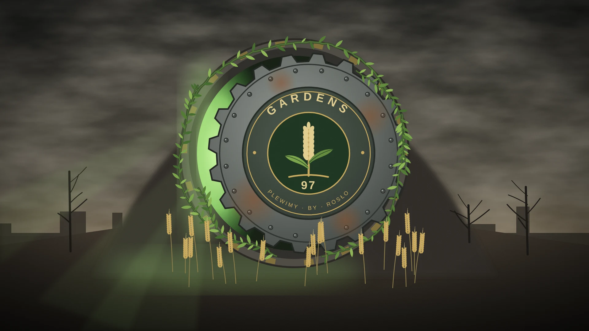
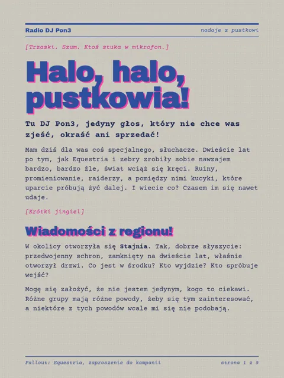
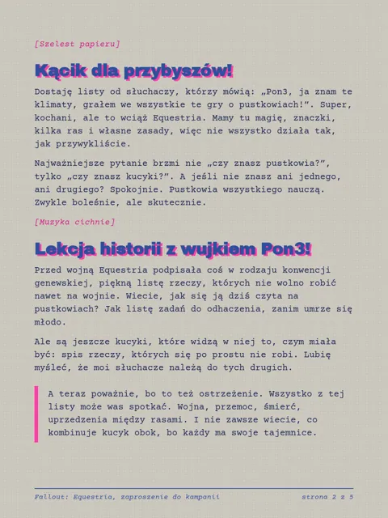
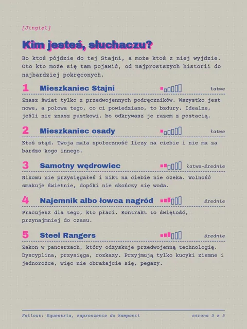
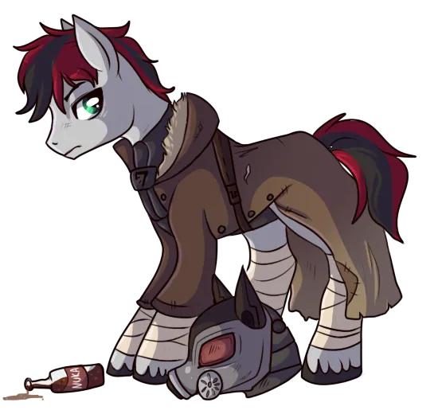
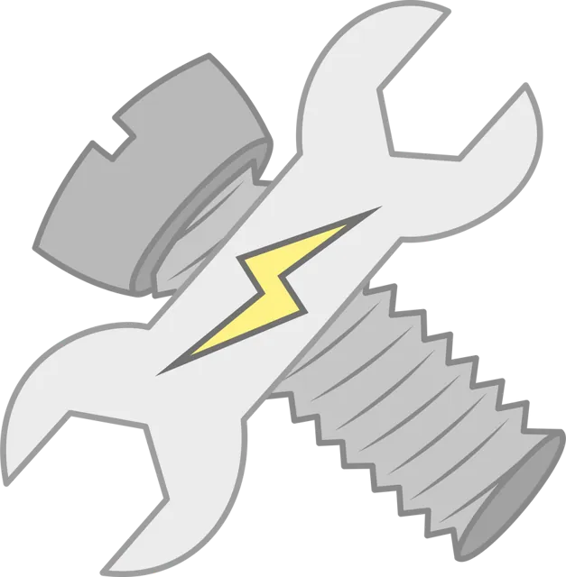
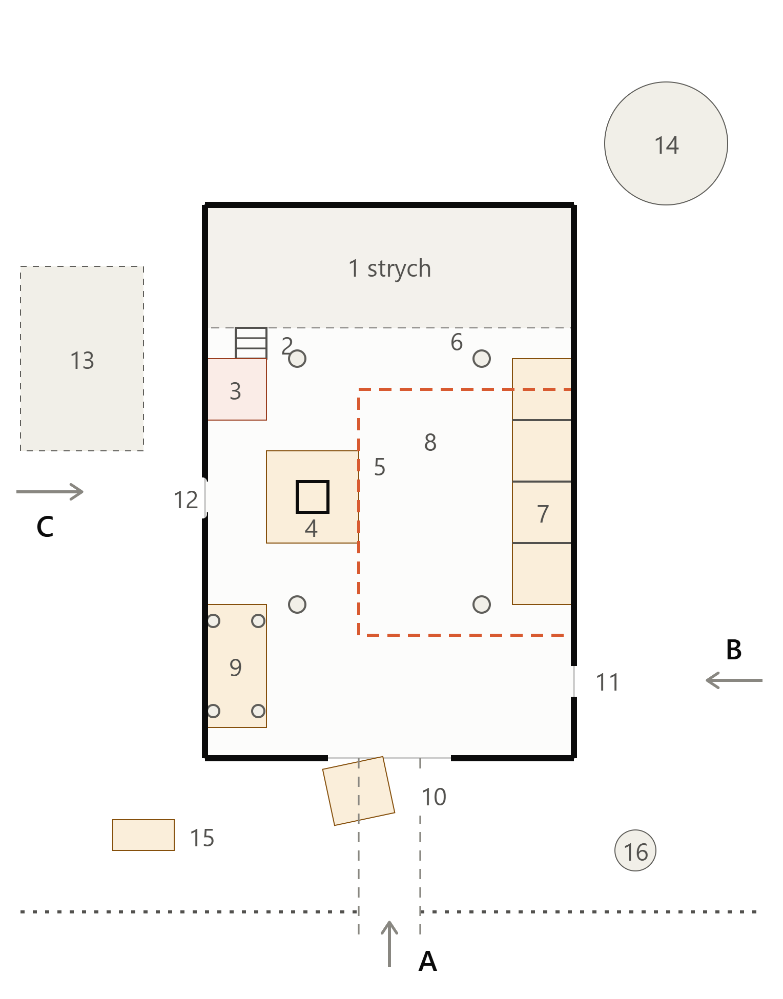
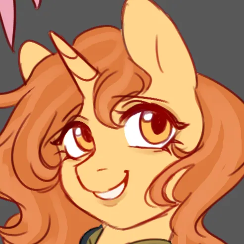

Wszystkie materiały
47 z 47


Stajnia 97 „Gardens” — wprowadzenie
Krótki opis świata i Stajni dla graczy: Hoofington, dwieście lat po wojnie, pacyfistyczna społeczność i drzwi, które otworzyły się same.
FoE: Stajnia Ogrodów — szkielet kampanii
Ta zakładka to świat i założenia wspólne dla wszystkiego. Jednostrzał: Jednostrzał (Akt 1) · dalsza kampania: Kampania · wątki konkretnych graczy (tylko MG): Wątki graczy
Wybór rasy
Poradnik dla graczy, którzy znają kucyki z kreskówki, ale jeszcze nie z pustkowi: jakie rasy są dostępne i czym się różnią.
Opowieść przy ogniu — świat oczami zebr
Co stara zebra mówi młodym w noc przed próbą. Świat pustkowi oczami zebr.
Świat na zewnątrz — podręcznik Stajni 97
Podręcznik mieszkańca, edycja szkolna — wszystko, co młody kucyk ze Stajni 97 „powinien wiedzieć” przed Dniem Otwarcia.
Obserwator — wiadomość dla tych, którzy wyszli
Zapis z głośnika sprite-bota, który odnalazł cię zaraz po wyjściu ze Stajni. Osiem części, kilkanaście minut czytania.
Witaj na pustkowiach — audycja DJ PON-3
Zapis audycji DJ PON-3 dla świeżaków: poradnik przetrwania, kącik techniczny, magia, wiadomości z Hoofington.
Przewodnik po podręczniku FoE – co czytać dla twojej rasy
Podręcznik ma ponad 630 stron, ale do stworzenia postaci potrzebujesz około 100–150 z nich. Najpierw przeczytaj strony wspólne, potem tylko sekcję swojej rasy.
Ściąga gracza: kuc ziemski ze Stajni
Jak działają rzuty d%, TN i MFD — wszystko, czego kuc ziemski ze Stajni potrzebuje przy stole.
Zaproszenia — komplet (ZIP)
Wszystkie pięć stron zaproszenia w jednym archiwum.







Karta postaci - Rusty Spur
Karta postaci (Fallout: Equestria V1.22) — Rusty Spur, kucyk ziemny. Gracz: Erwin.
Poniacz — historia Rusty’ego
Odpowiedzi do tworzenia postaci: Ciche Brody, noc, kiedy przyszli, kogo zostawił.


Spisane Prawo
Zeszyt Rusty’ego Spura: co wie o świecie, o sobie i o prawie. Część stron czeka na jego rękę.
Księga Szponu (wcześniejsza wersja)
Poprzednia wersja Księgi Szponu, zachowana dla porównania.
Karta postaci - Tymianox
Karta postaci (Fallout: Equestria V1.22) — Tymianox.




Karta postaci - Uriel
Karta postaci (Fallout: Equestria V1.22) — Uriel. Gracz: zychu.
Księga Szponu
Co wie o gryfach ten, którego wychowała Igła — kompendium dla postaci Uriela. Aktualna wersja.




Ekran MG · Fallout: Equestria
Wszystkie zasady pod ręką: rzuty, MFD, walka, obrażenia, strach, promieniowanie, przetrwanie — plus Stajnia 97, NPC i sekret.
Jednostrzał i sesje zero — komplet MG
Jednostrzał (Akt 1) oraz sesje zero: mieszkaniec Stajni Ogrodów, Uriel i Rusty Spur w jednym pliku.
Echa Stajni 42 — przykładowa kampania (JSON)
Przykładowe dane kampanii do narzędzia MG: powiązane wpisy, wątki i plan aktów.
Sesja 0: Mieszkaniec Stajni Ogrodów
Sesja jeden na jeden dla gracza ze Stajni: od materiałów szkoleniowych przez ostatni wieczór w Ogrodach po wyjście tunelem do stodoły.
Sesja zero: Rusty Spur — Noc w Cinder Ford
Wersja 2. Jedna noc w barze „Mokre Kopyto”, informatorka i wieści o Knocie.
Sesja zero: Uriel — Księga Długu
Gunther czyta swoją księgę rachunkową, a każdy wpis otwiera retrospekcję i krok tworzenia postaci.
Jednostrzał: Stodoła, Krąg i łowcy niewolników
Scenariusz dla MG na 2–3 sesje dla 4 postaci 1. poziomu, po indywidualnych sesjach zero.




Nic nie pasuje do filtrów.